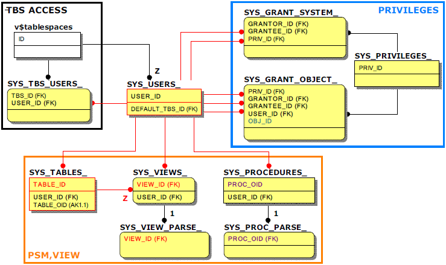

사용자의 테이블스페이스 접근 가능여부, 시스템/객체 권한, PSM, 뷰 관련 주요 메타테이블 및 성능뷰
실시간 모니터링이 필요하진 않으나 운영업무 중 자주 확인되는 요소로 '사용자의 테이블스페이스 접근 가능 여부', '시스템/객체 권한', '스키마객체'를 들 수 있다. 스키마 객체의 경우는 PSM(프로시져/펑션/타입세트), 뷰가 대표적이다.
관련 정보를 얻기 위해 조인쿼리 시 참고할 주요 키 컬럼만 표기한 메타테이블 및 성능뷰의 관계는 아래와 같다.

참고로 SYS_GRANT_OBJECT_에서 객체번호인 OBJ_ID 컬럼(녹색)에 대응하는 다른 객체의 컬럼 이름은 객체에 따라 서로 달라지므로 주의가 필요하다. 여기서는 TABLE_ID(붉은색), VIEW_ID(붉은색), PROC_OID(보라색) 컬럼을 예로 들 수 있다.
또한, 대부분의 데이터베이스 객체는 그에 대응하는 별도의 메타테이블을 가지나 뷰의 경우는 테이블과 함께 관리되므로 뷰의 이름과 같은 구체적인 정보는 SYS_TABLES_에서 확인하여야만 한다. SYS_VIEWS_는 뷰의 컴파일 여부만 저장되어 있다. (즉, SYS_VIEWS_의 VIEW_ID는 SYS_TABLES_의 TABLE_ID와 같다.)
주요 메타테이블
- SYS_TBS_USERS_
사용자가 접근 가능한 테이블스페이스 목록이 저장된 메타테이블이다. - SYS_PRIVILEGES_
시스템 권한, 객체 권한에 대한 권한번호(PRIV_ID)와 권한 이름(PRIV_NAME)이 저장된 메타테이블이다. - SYS_GRANT_SYSTEM_
사용자가 부여받은 시스템 권한에 대한 권한번호(PRIV_ID)가 저장된 메타테이블이다. - SYS_GRANT_OBJECT_
사용자가 부여 받은 객체 권한에 대한 권한번호(PRIV_ID)와 객체 정보가 저장된 메타테이블로 객체번호(OBJ_ID)를 통해 해당 객체의 상세정보를 확인할 수 있다.
- SYS_VIEWS_, SYS_VIEW_PARSE_
SYS_VIEWS_는 뷰의 컴파일 상태만 저장된 메타테이블이다. 뷰의 생성 구문은 SYS_VIEW_PARSE_를 통하여 확인할 수 있다. - SYS_PROCEDURES_, SYS_PROC_PARSE_
PSM(프로시져, 펑션, 타입세트)에 대한 상세한 정보가 저장된 메타테이블이다. 각 PSM에 대응하는 생성 구문은 SYS_PROC_PARSE_를 통하여 확인할 수 있다.
{kind=link}